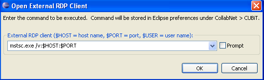

You can specify and store a command to connect to a Windows host using the Remote Desktop Protocol.
- In the CollabNet Sites view where you have added a Lab Management site, right-click, and select Open external RDP client.
- In the Add CollabNet Site dialog, select Add Site.
- In the Open External RDP Client window, enter the command to connect to the client.

For example, if you are on a Windows system and want to connect to a Windows XP host, enter a command in this format: mstsc.exe /v:$HOST:$PORT
.
- Select Prompt if you want this command to be displayed every time you try to open the client.
- Click OK.
Note: The command gets stored under Windows > preferences > CollabNet Lab Management.